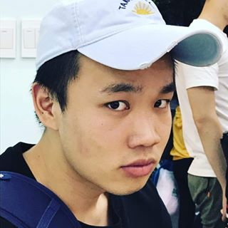

Hi, I'm Haihao Guo and I am a first year Master student in Computational Social Science in the University of Chicago.
My research focusing on the field of Consumer Behavioral, Industrial Organization and Behavioral Economics. I am also interested in applying machine learning to dive deep into the research of the social media. Other than this, I love playing guitar, jamming and watching Lakers game.
Drop me a line about your project if you're interested in working with me.